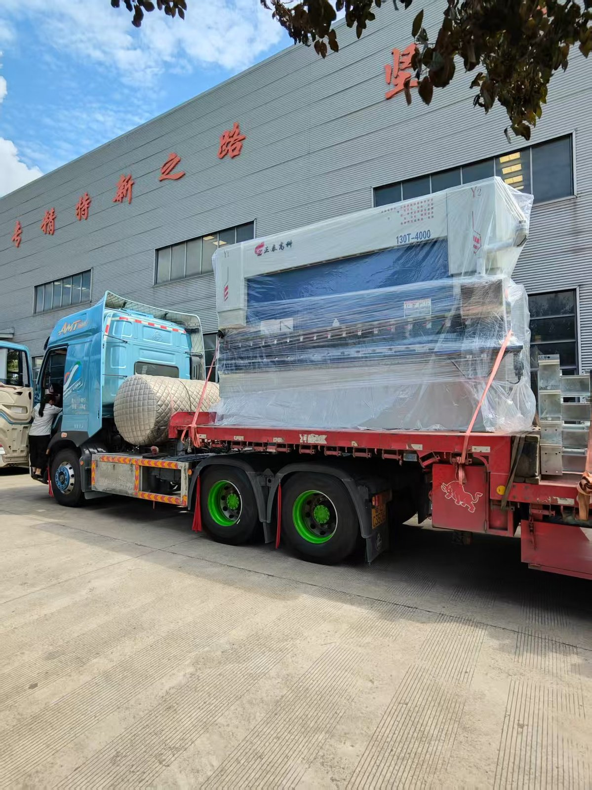
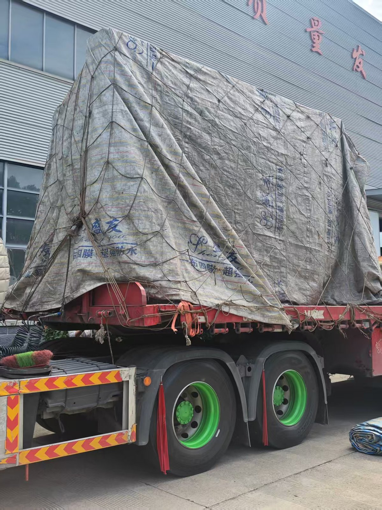

130T/4000 Electro-Hydraulic Press Brake Shipped: Why This Customer Chose the DELEM DA-53T Controller


Today's photos: a 130-ton, 4000 mm electro-hydraulic CNC press brake loaded on a flatbed truck — wrapped in export-grade film, then covered with a waterproof tarpaulin and rope net for the road. The model plate on the beam reads 130T-4000, and inside the electrical cabinet sits the brain this customer specifically asked for: an imported DELEM DA-53T CNC controller from the Netherlands.
1. What Is on the Truck
- The machine — 130 tons of bending force over a 4,000 mm bed: the classic mid-range workhorse for fabrication shops, electrical enclosures, containers and structural parts;
- Synchronization — electro-hydraulic servo valves with closed-loop Y1/Y2 control, holding bend angle repeatability shift after shift;
- Export packing — anti-rust film on all painted and machined surfaces, waterproof tarpaulin plus rope net over the whole load: the machine arrives exactly as it left our workshop.
2. Why DELEM DA-53T: The Brain Matters as Much as the Body
Two machines built from identical steel can bend very differently — the difference is the controller.
- The global standard — DELEM (Netherlands) is the de-facto reference for press brake CNCs; operators in most countries already know it, so training takes days, not months;
- Graphical touch programming — the DA-53T's 10.1" high-resolution touchscreen lets you program a part by drawing its profile; the controller calculates the bend sequence, developed length and axis positions automatically;
- Full axis control — Y1/Y2 cylinders, X and R back-gauge axes plus CNC crowning in one closed loop: stable angles from the first bend to the thousandth;
- Libraries that remember — tool, material and product libraries store proven jobs, so a part repeated six months later bends exactly the same way;
- Service for the long run — worldwide service network and long-term spare-part availability, which is what a machine expected to run 10–20 years really needs.
3. Your Machine, Your Controller: We Build to Your Choice
- DELEM DA-52S — cost-effective entry level for simple flanges and boxes;
- DELEM DA-53T — the export favourite and the unit in today's photos: the best balance of price, speed and capability for daily job changes;
- DELEM DA-58T / DA-66T — more axes and 3D graphical simulation for complex multi-bend parts and offline programming;
- ESA and Estun — also available on request for customers who standardize on these brands.
Tell us your parts and your budget and we will recommend the controller that pays for itself fastest — or tell us the brand your operators already use, and we will build the machine around it.
Want a press brake configured your way? Send your drawings, material and target budget — our engineers will propose tonnage, length and the right CNC controller, with a quotation within 24 hours.